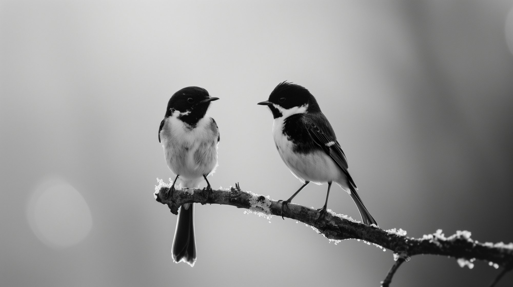

<!doctype html>
<html lang="en">
<head>
<meta charset="utf-8" />
<meta name="viewport" content="width=device-width, initial-scale=1, viewport-fit=cover" />
<title>2birds asia | Brand</title>
<meta name="description" content="The brand story of 2birds. Who we are, why we exist, and how we work. A community of independent practitioners serving Singapore's Training and Adult Education sector." />

<link rel="icon" type="image/png" href="assets/favicon.png?v=6" />
<link rel="shortcut icon" type="image/png" href="assets/favicon.png?v=6" />
<link rel="apple-touch-icon" href="assets/favicon.png?v=6" />
<link rel="stylesheet" href="css/foundations.css" />
<link rel="stylesheet" href="css/site.css" />
<link rel="stylesheet" href="css/i18n.css" />
<link rel="stylesheet" href="css/premium.css" />

<script src="https://unpkg.com/react@18.3.1/umd/react.development.js" integrity="sha384-hD6/rw4ppMLGNu3tX5cjIb+uRZ7UkRJ6BPkLpg4hAu/6onKUg4lLsHAs9EBPT82L" crossorigin="anonymous"></script>
<script src="https://unpkg.com/react-dom@18.3.1/umd/react-dom.development.js" integrity="sha384-u6aeetuaXnQ38mYT8rp6sbXaQe3NL9t+IBXmnYxwkUI2Hw4bsp2Wvmx4yRQF1uAm" crossorigin="anonymous"></script>
<script src="https://unpkg.com/@babel/standalone@7.29.0/babel.min.js" integrity="sha384-m08KidiNqLdpJqLq95G/LEi8Qvjl/xUYll3QILypMoQ65QorJ9Lvtp2RXYGBFj1y" crossorigin="anonymous"></script>

<script src="js/transition.js"></script>
<script src="js/i18n.js"></script>
</head>
<body class="is-premium" data-screen-label="06 Brand">
<div id="root"></div>

<script type="text/babel" src="js/shared.jsx"></script>

<script type="text/babel">

const ICON_SVG = (paths) => (
  <svg viewBox="0 0 64 40" width="62" height="39" fill="none" stroke="currentColor"
       strokeWidth="1.4" strokeLinecap="round" strokeLinejoin="round">
    {paths}
  </svg>
);

/* The draft — three birds in echelon, each riding the upwash of the one ahead. */
const ICON_DRAFT = ICON_SVG(<>
  <path d="M8 13 C 11 7.5, 14 7.5, 16 12 C 18 7.5, 21 7.5, 24 13" />
  <path d="M22 22 C 25 16.5, 28 16.5, 30 21 C 32 16.5, 35 16.5, 38 22" />
  <path d="M36 31 C 39 25.5, 42 25.5, 44 30 C 46 25.5, 49 25.5, 52 31" />
</>);

/* The watch — two birds over a still horizon, one aloft reading the distance. */
const ICON_WATCH = ICON_SVG(<>
  <path d="M9 31 C 24 28, 40 28, 55 31" />
  <path d="M15 16 C 17.5 11.5, 20.5 11.5, 22 15 C 23.5 11.5, 26.5 11.5, 29 16" />
  <path d="M37 24 C 39 20.5, 41.5 20.5, 43 23.5 C 44.5 20.5, 47 20.5, 49 24" />
</>);

/* The bond — a mirrored pair, necks curving together for the long crossing. */
const ICON_BOND = ICON_SVG(<>
  <path d="M14 33 C 12 21, 19 14, 32 20" />
  <path d="M50 33 C 52 21, 45 14, 32 20" />
  <circle cx="14" cy="33" r="1.7" fill="currentColor" stroke="none" />
  <circle cx="50" cy="33" r="1.7" fill="currentColor" stroke="none" />
</>);

const PAIR_PRINCIPLES = [
  {
    title: "The draft",
    icon: ICON_DRAFT,
    nature: "A bird in formation rides the upwash of the one ahead and saves real energy on every wingbeat. The lead takes the hardest air, and the pair shares the burden by turns.",
    practice: "We fly at the front of the regulatory headwind, so your team reaches the work itself with energy still to spare.",
  },
  {
    title: "The watch",
    icon: ICON_WATCH,
    nature: "Two birds keep watch in turns. While one feeds, the other reads the horizon, and little reaches the pair unseen.",
    practice: "Two sets of eyes review every submission. What one of us would miss, the other is placed to catch, well before SSG ever does.",
  },
  {
    title: "The bond",
    icon: ICON_BOND,
    nature: "Many species pair for life, navigating, defending and returning together. The bond is not ornament; it is how they survive the long crossings.",
    practice: "We stay paired with you for the whole crossing, not the first leg, because the engagements that succeed are the ones nobody flew alone.",
  },
];

function App() {
  return (
    <>
      <NavBar current="brand" />
      <main>

        {/* PAGE HERO */}
        <section className="tb-pagehero">
          <div className="container tb-pagehero__inner">
            <div className="tb-pagehero__loc">
              <a href="index.html">2birds</a>
              <span style={{ margin: "0 10px" }}>·</span>
              <span>The brand</span>
            </div>
            <h1 className="tb-pagehero__title">
              Why <em>2birds</em>.
            </h1>
            <p className="tb-pagehero__lede">
              An independent practice of curriculum development and advisory serving Approved Training Organisations, where no engagement leaves without a senior practitioner's review.
            </p>
          </div>
        </section>

        {/* WIDE EDITORIAL FIGURE, 16:9, with breathing room */}
        <section className="premium-section premium-section--paper tb-reveal" style={{ paddingTop: 0, paddingBottom: 120 }}>
          <div className="container">
            <figure className="premium-figure premium-figure--16x9 premium-figure--restrained premium-figure--photo">
              
              <span className="premium-figure__ratio">16 : 9</span>
              <div className="premium-figure__brief">
                <span className="premium-figure__brief-label">The name, made literal</span>
                <p className="premium-figure__brief-text">
                  Two of them, settled on the same pier. Not flying, not fishing, simply together for the moment. The proverb without the stone.
                </p>
              </div>
            </figure>
            <p className="premium-figure-caption">
              On the pier · the brand, as it was originally pictured.
            </p>
          </div>
        </section>

        {/* § I, A SCENE BEFORE THE EXPLANATION */}
        <section className="premium-section premium-section--bone tb-reveal">
          <div className="container">
            <div className="premium-twoup premium-twoup--narrow">
              <aside className="premium-twoup__meta">
                § I · Before the explanation, a scene
                <span className="premium-twoup__meta-num">01</span>
              </aside>
              <div>
                <h2 className="premium-h2">Handed over, with <em>care</em>.</h2>
                <div className="premium-prose">
                  <p>
                    There are two ways to hand over a finished piece of work. The first is correct: every figure in place, every requirement met, nothing technically wrong with it. The second is correct as well, and something more. The reader can see that someone thought of them. The summary sits on top rather than buried. The one question they were about to ask has already been answered. The version line says plainly what changed since they last looked.
                  </p>
                  <p>
                    The difference is rarely technical. It is the difference between work that is merely finished and work that is finished and handed over with care. It costs no more, in raw materials, than the version beside it. What it costs is attention.
                  </p>
                  <p>
                    We took the name from a saying, and the standard from that second kind of handover. Quality, we think, is not a single thing done well; it is two things carried at once, the work itself and the small care that surrounds it.
                  </p>
                </div>
              </div>
            </div>
          </div>
        </section>

        {/* § II, THE PROVERB INVERTED */}
        <section className="premium-section premium-section--paper tb-reveal">
          <div className="container">
            <div className="premium-twoup premium-twoup--narrow">
              <aside className="premium-twoup__meta">
                § II · The name
                <span className="premium-twoup__meta-num">02</span>
              </aside>
              <div>
                <h2 className="premium-h2">A proverb, <em>quietly</em> inverted.</h2>
                <div className="premium-prose">
                  <p>
                    The English proverb speaks of one stone and two birds, and is usually read as a lesson in thrift. We read it differently. We kept the two birds, and set the stone aside.
                  </p>
                  <p>
                    Beneath the saying is an older idea, that two things worth carrying need not be carried separately, and that the discipline lies in carrying both at once, without dropping either. Most practices in our sector pick one. We named ours after the harder choice.
                  </p>
                  <p>
                    The two we mean to carry, every time, are <strong>the craft</strong> and <strong>the care</strong>. One without the other is not a practice we wanted to build, and not a standard worth signing our name to.
                  </p>
                </div>
              </div>
            </div>
          </div>
        </section>

        {/* § III, THE TWO BIRDS, NAMED, diptych */}
        <section className="premium-section premium-section--bone tb-reveal">
          <div className="container">
            <div style={{ maxWidth: 1100, margin: "0 auto" }}>
              <header style={{ textAlign: "center", marginBottom: 72 }}>
                <div className="premium-twoup__meta" style={{ display: "inline-block", borderTop: "none", paddingTop: 0, marginBottom: 18 }}>
                  § III · The two birds, named
                </div>
                <h2 className="premium-h2" style={{ margin: "0 auto", maxWidth: "26ch" }}>
                  One bird is the <em>craft</em>.<br />The other is the <em>care</em>.
                </h2>
              </header>

              <div className="tb-diptych">
                <article className="tb-diptych__panel">
                  <div className="tb-diptych__glyph" aria-hidden="true">
                    <svg viewBox="0 0 64 40" width="72" height="46">
                      <path d="M2 30 C 14 8, 26 8, 32 24 C 38 8, 50 8, 62 30" fill="none" stroke="currentColor" strokeWidth="1.6" strokeLinecap="round" />
                    </svg>
                  </div>
                  <div className="tb-diptych__num">i.</div>
                  <h3 className="tb-diptych__title">The Craft</h3>
                  <p className="tb-diptych__lede">The work, done correctly, the first time.</p>
                  <div className="premium-prose">
                    <p>
                      An accreditation that passes on first reading. A curriculum that a trainer can teach on a Monday morning, exactly as written. An audit response that closes the file rather than reopens it. The craft, in this sector, is not visible to the public; it is visible to the regulator who notices that nothing is missing, and to the director who notices that nothing was difficult.
                    </p>
                  </div>
                </article>

                <article className="tb-diptych__panel">
                  <div className="tb-diptych__glyph" aria-hidden="true">
                    <svg viewBox="0 0 64 40" width="72" height="46">
                      <path d="M2 30 C 14 8, 26 8, 32 24 C 38 8, 50 8, 62 30" fill="none" stroke="currentColor" strokeWidth="1.6" strokeLinecap="round" />
                    </svg>
                  </div>
                  <div className="tb-diptych__num">ii.</div>
                  <h3 className="tb-diptych__title">The Care</h3>
                  <p className="tb-diptych__lede">The work, delivered the way you would wish to receive it.</p>
                  <div className="premium-prose">
                    <p>
                      Notes returned within two working days. Fees stated in plain numbers, before the work begins. Scopes written so a non-specialist can sign them, and a regulator can accept them. A folder you do not have to chase, an email you do not have to read twice, and a person at the other end who has anticipated the next question. We hold ourselves to the manner of an old grand hotel, where the work is faultless and the guest, never once, an afterthought.
                    </p>
                  </div>
                </article>
              </div>
            </div>
          </div>
        </section>

        {/* PULL QUOTE */}
        <section className="premium-quote premium-quote--bone tb-reveal">
          <div className="premium-quote__inner">
            <span className="premium-quote__mark" aria-hidden="true">“</span>
            <p className="premium-quote__text">
              Quality is seldom one large thing done well. It is a hundred small things that no one would have noticed were left undone.
            </p>
            <div className="premium-quote__cite">From the practice · 2birds</div>
          </div>
        </section>

        {/* WHY BIRDS FLY IN PAIRS — the science, then the client */}
        <section className="premium-section premium-section--bone tb-reveal tb-pair" style={{ paddingTop: 56 }}>
          <div className="container">
            <header className="tb-pair__head">
              <span className="tb-pair__eyebrow">A question worth asking</span>
              <h2 className="tb-pair__title">Why birds fly in <em>pairs</em>.</h2>
              <p className="tb-pair__lede">
                Have you ever wondered why birds so often fly in pairs? It is rarely by
                accident. Across species, pairing is an adaptation before it is a sentiment:
                two travel farther than one, see more than one, and arrive in better
                condition than one. We took the name because the science agrees with the
                feeling.
              </p>
            </header>

            <figure className="tb-pair__figure">
              
              <figcaption className="tb-pair__figcaption">Two on a branch · turned toward one another, as pairs tend to be.</figcaption>
            </figure>

            <div className="tb-pair__grid">
              {PAIR_PRINCIPLES.map((p, i) => (
                <article key={i} className="tb-pair__card">
                  <span className="tb-pair__glyph" aria-hidden="true">{p.icon}</span>
                  <h3 className="tb-pair__card-title">{p.title}</h3>
                  <div className="tb-pair__row">
                    <span className="tb-pair__tag">In nature</span>
                    <p className="tb-pair__text">{p.nature}</p>
                  </div>
                  <div className="tb-pair__row tb-pair__row--practice">
                    <span className="tb-pair__tag tb-pair__tag--practice">In practice</span>
                    <p className="tb-pair__text">{p.practice}</p>
                  </div>
                </article>
              ))}
            </div>

            <p className="tb-pair__close">
              We chose two birds because a pair is built to finish the crossing. We form a
              genuine bond with each client, fly at the front of the headwind with our
              expertise, keep watch until the work is safely down, and stay in formation
              until the project has arrived. We care that you succeed, <em>and we do not
              leave the formation early.</em>
            </p>
          </div>
        </section>

        {/* § IV, A SECOND READING, the community */}
        <section className="premium-section premium-section--paper tb-reveal">
          <div className="container">
            <div className="premium-twoup premium-twoup--narrow">
              <aside className="premium-twoup__meta">
                § IV · A second reading
                <span className="premium-twoup__meta-num">04</span>
              </aside>
              <div>
                <h2 className="premium-h2">Two birds, <em>never one</em>.</h2>
                <div className="premium-prose">
                  <p>
                    The name carries a second meaning, plainer than the first. Two pairs of eyes are rarely too many, and one is too often too few. The practice was set up as a community from the start, because the work, whether a curriculum, a TPQA submission, an audit response or a trainer brought into a new programme, is rarely well served by a single voice.
                  </p>
                  <p>
                    Every engagement is paired. A Level&nbsp;3 Senior Professional AE leads, and an accredited curriculum developer, subject-matter expert or assessor from within the community works alongside. The pairing is not a hierarchy; it is the smallest unit at which the work can be done <em>and</em> finished. Two reviewers catch what one would not, and the cost of having both is borne by the practice, not the client.
                  </p>
                  <p>
                    Two birds, then, also means this. Never alone on the work, never alone for the client. A small community, settled on the same pier, choosing carefully which water to fly over.
                  </p>
                </div>
              </div>
            </div>
          </div>
        </section>

        {/* § V, WHY THE SECTOR NEEDS THIS */}
        <section className="premium-section premium-section--bone tb-reveal">
          <div className="container">
            <div className="premium-twoup premium-twoup--narrow">
              <aside className="premium-twoup__meta">
                § V · Why the practice exists
                <span className="premium-twoup__meta-num">05</span>
              </aside>
              <div>
                <h2 className="premium-h2">Making the sector <em>legible</em>.</h2>
                <div className="premium-prose">
                  <p>
                    Curriculum development, TPQA and compliance, trainer and SME sourcing, and ATO operations are each governed by frameworks that are publicly documented, and yet rarely read end to end. The cost of that opacity is borne by training providers, by the practitioners who work with them, and, ultimately, by the learners who fund the sector with their time.
                  </p>
                  <p>
                    Our work is to translate. We render the framework into something a director, a curriculum lead or an incoming trainer can act upon, and we render the act back into the form the regulator expects. Where we develop courseware, we develop it under that translation. Where we advise, we advise plainly. The four practice areas are different windows onto the same purpose, and on the same pair of birds.
                  </p>
                </div>
              </div>
            </div>
          </div>
        </section>

        {/* (removed: "the figure of two recurs" aside, felt forced) */}

        {/* § VI, THE FOUNDING OBSERVATION */}
        <section className="premium-section premium-section--bone tb-reveal">
          <div className="container">
            <div className="premium-twoup premium-twoup--narrow">
              <aside className="premium-twoup__meta">
                § VI · A founding observation
                <span className="premium-twoup__meta-num">06</span>
              </aside>
              <div>
                <h2 className="premium-h2">What we kept <em>noticing</em>.</h2>
                <div className="premium-prose">
                  <p>
                    A twenty-page accreditation, returned with a single line of comment. A trainer who could hold a room of forty, but could not write the lesson plan a regulator would read. A director who could read the lesson plan, but had never seen the room. The same pattern, recurring, in every corner of the sector we worked in.
                  </p>
                  <p>
                    The frameworks were not the problem. The framework is, in fact, generous to a careful reader. The problem was that the careful reading was being done in one room, and the careful teaching in another, and the two rooms rarely met. The practice was named the day we admitted that bringing them into the same room was, on its own, the work.
                  </p>
                </div>
              </div>
            </div>
          </div>
        </section>

        {/* § VII, HOW WE WORK */}
        <section className="premium-section premium-section--paper tb-reveal">
          <div className="container">
            <div className="premium-twoup premium-twoup--narrow">
              <aside className="premium-twoup__meta">
                § VII · How we work
                <span className="premium-twoup__meta-num">07</span>
              </aside>
              <div>
                <h2 className="premium-h2">Concise, and on <em>principle</em>.</h2>
                <div className="premium-prose">
                  <p>
                    The practice runs under modest overheads. There is no staffed office, no marketing budget to recover, and no margin levied on the people we introduce. We accept a limited number of engagements each quarter so that every one is led personally, and finished properly.
                  </p>
                  <p>
                    Our notes are short, our deliverables are returned on schedule, our fees are stated in plain numbers, and our scope is written in language a non-specialist can sign. We would rather decline a piece of work than render it poorly, and we say so by return of email. It is, we hope, the form of practice the sector deserves, and the simplest way to keep both birds in flight.
                  </p>
                </div>
              </div>
            </div>
          </div>
        </section>

        {/* CTA */}
        <CTAPanel
          eyebrow="Begin a conversation"
          title={<>Write to the <em className="t-italic on-dark">practice.</em></>}
          sub="A note on what you have in mind is all we need to begin. You will hear from us within two working days, and there is no obligation in the asking."
          primary={{ label: "Make an enquiry", href: "contact.html" }}
          secondary={{ label: "Read our manifesto", href: "index.html#manifesto" }}
        />

      </main>
      <Footer />
    </>
  );
}

ReactDOM.createRoot(document.getElementById("root")).render(<App />);
</script>
</body>
</html>
